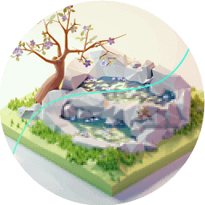
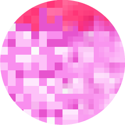
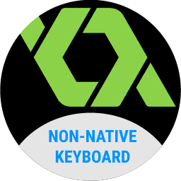

My beautiful project
basement.
To everyone who shall decide to continue, be aware that I'm VERY PROUD of those.
Let's dive in !
Game Resolution Scaler
The project is for Android (5.0-11+), tailored towards low end devices which cannot play heavier games.
Simple to use, it was made originally for my brother's birthday so he could play Genshin Impact !
How it works it rather simple: by sending commands into the window manager in Android, I could adjust some settings "on the fly"
See source codeMinecraft Java Mods Optimizer
Another Android application, made to reduce the size of any Minecraft Java mod you could throw at it.
You may find uncommon to have such strange software on this platform... and you'll be right.
I'm just taking advantage from Android being based on linux. However, due to the poor reach of linux as a consumer OS, I decided to port over the original prototype to Android.
Check out releasesNon-native Keyboard
This is an extension for Game Maker Studio 1.4, it gives the ability to use a fully customizable non-native virtual keyboard, meaning it will work for both IOS and Android
I made this since I needed a keyboard for an Android game I planned to make for my ISN project. But we all know how 2020 went.
Check out releases